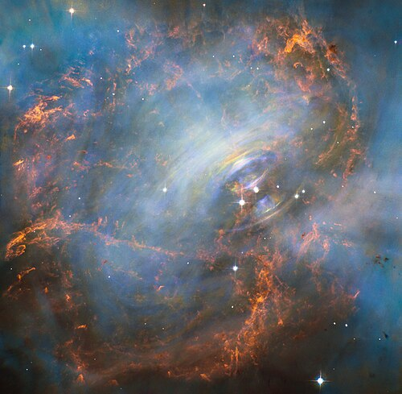
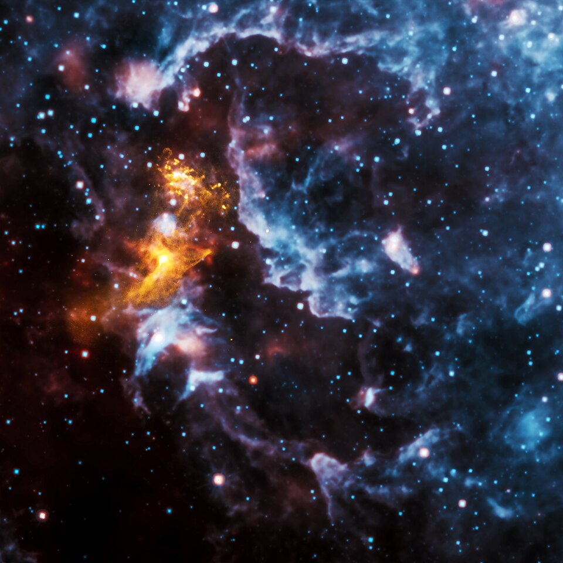

A neutron star is the gravitationally collapsed core of a massive supergiant star. It results from the
supernova explosion of a massive star—combined with gravitational collapse—that compresses the core past
white dwarf star density to that of atomic nuclei. Surpassed only by black holes, neutron stars are the
second smallest and densest known class of stellar objects. Neutron stars have a radius on the order of
10 kilometers (6 miles) and a mass of about 1.4 solar masses (M☉). Stars that collapse into neutron stars
typically have an initial total mass between 10 and 25 M☉ or possibly more for those that are especially
rich in elements heavier than hydrogen and helium.

Crab Nebula
There are thought to be around one billion neutron stars in the Milky Way, and at a minimum several
hundred million, a figure obtained by estimating the number of stars that have undergone supernova
explosions. However, many of them have existed for a long period of time and have cooled down
considerably. These stars radiate very little electromagnetic radiation; most neutron stars that have been
detected occur only in certain situations in which they do radiate, such as if they are a pulsar or a part
of a binary system. Slow-rotating and non-accreting neutron stars are difficult to detect, due to the
absence of electromagnetic radiation; however, since the Hubble Space Telescope's detection of RX
J1856.5 3754 in the 1990s, a few nearby neutron stars that appear to emit only thermal radiation have been
detected.

Image of Pulsar
Neutron stars in a binary system with a main sequence star can pull in large amounts of gas from its
companion, a process called accretion. These binary systems continue to evolve, with many companions
eventually becoming compact objects such as white dwarfs or neutron stars themselves, though other
possibilities include a complete destruction of the companion through ablation or collision.
The study of neutron star systems is central to gravitational wave astronomy. The merger of binary neutron
stars produces gravitational waves and is associated with kilonovae and short gamma-ray bursts. In
2017, the LIGO and Virgo interferometer sites observed GW170817, the first direct detection of gravitational
waves from such an event. Prior to this, indirect evidence for gravitational waves was inferred by
studying the gravity radiated from the orbital decay of a different type of (unmerged) binary neutron
system, the Hulse Taylor pulsar.